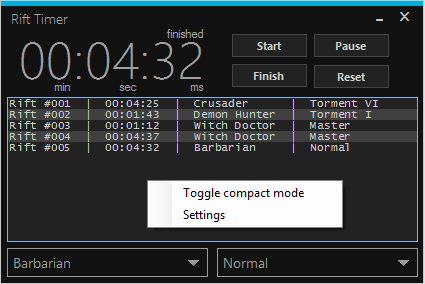
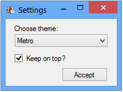

Rift Timer
Rift Timer is a small stopwatch-style application for manually tracking the length of (regular) rifts in Diablo 3. I got the idea while trying to push faster and faster speed rifts while farming after getting tired of guessing based on looking at the clock when starting and stopping a rift.
I didn't want to bother searching for a stopwatch program already out there because there's never a guarantee something small like that will do exactly what you want it to in the given context. I wanted a way to keep track of elapsed time and also log specific information related to what I was timing.

The main feature, other than the stopwatch of course, is the logging of each finished timer, along with information like the currently selected player class and the currently selected difficulty. The list of completed rifts will be logged to a timestamped file in the logs folder, found in the Rift Timer folder wherever you put it after unzipping.
Themes and Modes
An alternative theme is available, accessed via the theme chooser in the settings pane. The settings pane can be accessed by right clicking anywhere inside the program window.


Compact mode can be activated via the right click menu as well (click or press 'c' while the menu is opened). Compact mode will shorten the height of the window, cutting off the log box and class/difficulty dropdown menus. The log box will still update in compact mode, and rift times will still be saved and able to be viewed at any time by toggling off compact mode.

Hotkeys
Using the modifier Shift+Ctrl, there are 4 global hotkeys available to Rift Timer. S to start/resume, F to finish, E to pause, and R to reset.